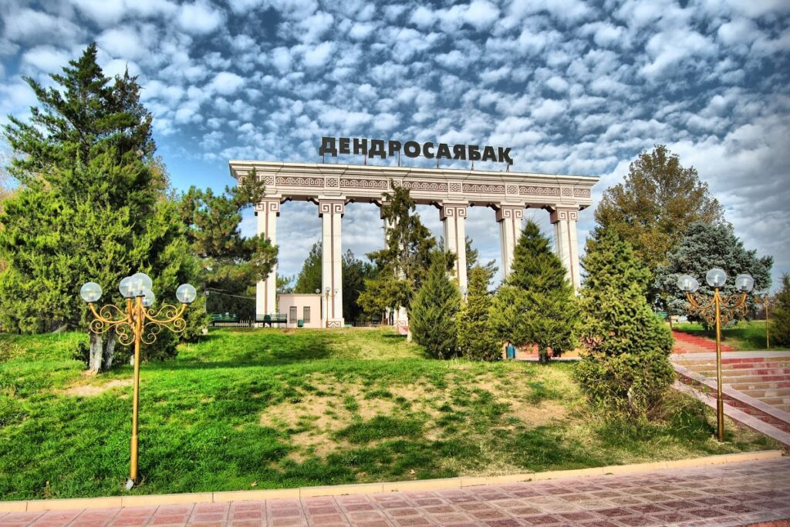
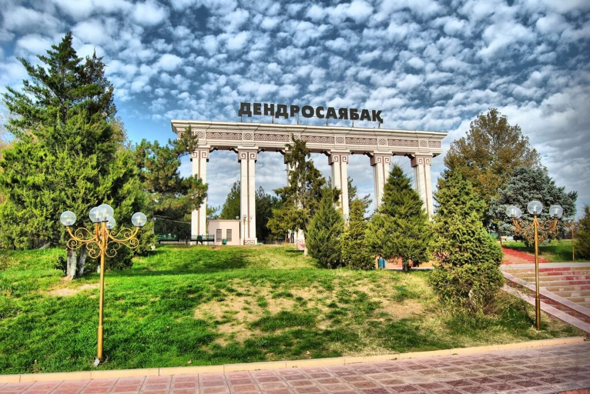

Shym City

Green City
Welcome to the treasure that my lovely hometown can offer to newcomers
Green City
Welcome to the treasure that my lovely hometown can offer to newcomers
 

One of the best gathering places for friends, families, and relatives: Arbat, Dendrosayabak, Fontan.
What else?
It is firmly believed that southern part of Kazakhstan is known for its amazing nature and wonderful views on mountains. Appart from that, there are also several historical sites that bear thousands of stories and generations.
So let's consider this side of Shymkent's surroundings.
Click here to get to know more about the natural heritage: More info.